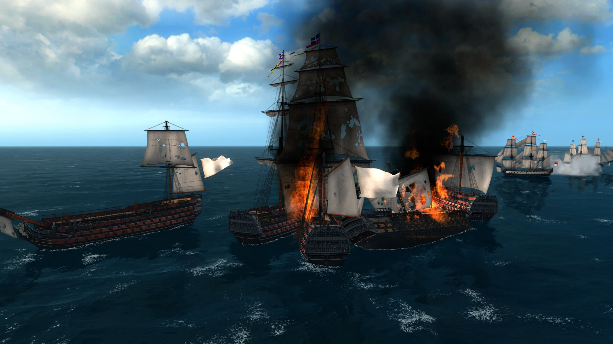
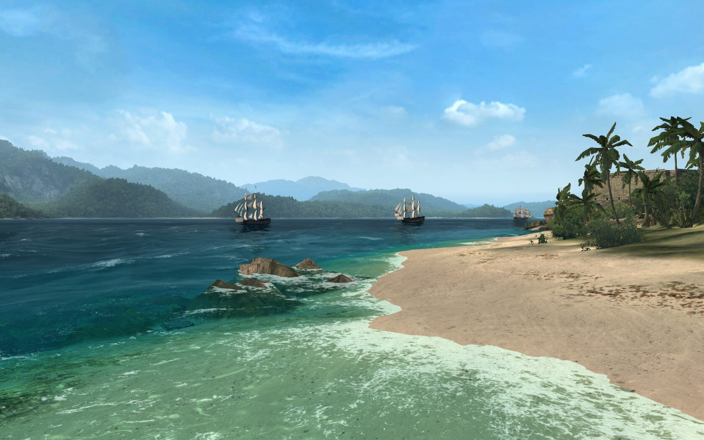

Как не надо делать игры на примере Naval Action
Данная игра из категории "Гладко было на бумаге, да забыли про овраги." Игра, созданная инвалидами от гейм-дизайна, попавшимися на удочку одного небольшого успеха
Описание - огонь, ролики и картинки отпад, внутри колючий и очень не свежий кактус. К чему подобные аналогии, вы спросите? Да к тому, что этот кактус вам придётся грызть. Если не успеете сделать возврат, а вы его не успеете сделать, так как 10 дней, чтобы разобраться в этой игре, критически малый срок, то вам придётся грызть этот кактус на все ваши деньги. Другого способа успокоить своё бурлящее, как в деревенском сортире, недовольство, у вас не будет. Каждый раз вы будете заходить в игру с долбящей ваш мозг мыслью, что вас где-то обули, но, поначалу, не сможете угадать где. Это мысль вас будет долбить так часто и тщательно, как дятел долбит своё любимое дупло. Вы судорожно будете искать ответ на свои вопросы "Где?", "Как?", но ответы, изначально кажущиеся у вас под рукой будут уплывать как вода сквозь пальцы. В порыве ненависти дрожащими руками вы полезете в свой кошелёк и хапните оптом все ДЛС и только соберётесь с облегчением выдохнуть, мол, вот оно счастье, вот он выход, вы поймёте что только усугубили своё положение. Дома, на работе, на отдыхе кактус будет вас царапать своими иглами и дурманящим запахом щекотать ноздри.Если у вас крепкие нервы, чистые руки и твёрдый кал, вы сможете скрыть свою ярость и со спокойной миной на лице внушить всем, что это именно то что вы искали много лет. Как только выйдете из игры, отключите программу переговоров, вы будете выходить из дому, брать в руки палку, cадиться на забор и поковыривая первую попавшуюся кучку, станете думать как вернуть себе покой. Вам уже не будет казаться кощунственным и подлым поступок, когда один гражданин, вляпавшись в ♥♥♥♥♥♥♥♥♥♥о не предупреждает об этом окружающих, спасая их от беды, а скрывает это для того чтобы не одному быть обляпанным. Но вы и подумать не могли что это только начало. Как только вы собрались смириться и успокоится как вторая волна ништяков вас накроет с головой. Вы будете себе вновь и вновь повторять что вы хотели как лучше, что всего-лишь высказали своё мнение об игре и чего не мешало бы в ней увидеть. Вы уже начинаете себе доказывать что в мире расцвет демократии и свободы слова,но понимаете, что вас слушает только ваше отражение в зеркале, а в голове словно молотом грохочат слова "Бери кактус и грызи, и обязательно не забудь похвалить". Вы даже окрепнуть не успеете как вам подскажут, по большому секрету конечно, что "верное" решение есть и оно рядом.
-"Ещё один аккаунт, а лучше четыре или пять." - эхом будет звучать в вашей комнате настойчивый голос.
-"Стой дебил!" - будет с боем прорываться к вашему сознанию голос разума. Но это не равный бой. Споткнувшись о свой здравый смысл, вы с разгона запрыгиваете в компьютерное кресло и оптом впариваете себе пять дополнительных аккаунтов с ДЛС на дополнительные постройки и посты. Всё, забадай меня комар, кричите вы и радостно хлопаете клешнями. 60 построек, возделывая клешни к небу, кричите вы. Я всё могу делать сам! Но при этом вы так и не узнали, что ключевые компоненты ни с дополнительными аккаунтами, ни с ДЛС у вас в игре не появятся. Эти компоненты - время и сырьё для улучшения корабля. Месяца через три-четыре, поняв из чего состоит игра, вы начинаете любить её всем своим пламенным сердцем. Вот так.
Неплохие модели кораблей, добротно реализована погода и анимация водной глади. Механика морских боёв неплоха, если заучить наизусть клавиши действий и упорной тренировкой не глядя их нажимать по необходимости. На этом всё, блага закончились.
Отсутствие альтернативы.
Хорошие улучшения для кораблей по затратам времени дороже кораблей.Сырьё для этих улучшений игра в определённых городах выставляет на продажу в ограниченном количестве. Если всё покупать на аукционе, то большую часть игрового времени вы будете тратить на добычу денег для покупки необходимых улучшений. Если вы зададите вопрос разработчикам, то скорее всего получите ответ что есть аналоги в игровых заведениях за награды ПВП и золотые дублоны. При этом их не интересует твоё мнение насчёт того, что ты хочешь за свои деньги иметь улучшения которые ты можешь сам производить, а не покупать. То есть, эти предметы есть в игре, но получить их по времени не пропорционально затратно.
Их теория действует если вы очень мало тонете, что для вас неосуществимо. Корабль с хорошими книгами(это тоже один из видов улучшений) и улучшениями, и корабль без них - это два разных корабля. По началу, не имея опыта, вы этого не заметите, но потом будете остро ощущать разницу.
Если собираетесь часто драться, то поначалу будете много тонуть.Наград ПВП от этого много не будет. Дублонов тоже. Чтобы добыть золотую валюту игры придётся крабить - возить пассажиров, торговые товары, топить НПС.
Строится без сообщества вы не сможете. Города имеют систему развития, которую один игрок не потянет. Контроль над городом может взять сообщество в портовой битве, где оно само устанавливает свои правила. Другим сообществам в тех городах можно производить только с разрешения того сообщества которое захватило тот город. Вам либо вступать в сообщество и подчинятся их правилам, либо создавать своё и ползти вверх. На данном этапе развития игры это очень слабо реализуемая вещь.
Сушёное дерево для строительства боле мощных кораблей могут себе позволить даже не все сообщества, далеко не все.Разница между простым деревом и сушёным весьма ощутимая.
С введением многих кораблей как ДЛС строительство кораблей в игре теряет смысл, хотя для них тоже нужны улучшения.
В общем большую часть времени в игре вы будете добывать ресурсы разными способами, меньшую искать боёв с игроками. Ремонтные комплекты в производстве не дорогие, но доставка их через всю карту удовольствия вам не доставит. Вы будете возить их на малых, но быстрых кораблях, малыми партиями, потому что на большом и медленном торговце вам не дадут доплыть, утопят в 8 случаях их 10, ибо вся карта это сплошное ПВП.
Если вы потеряли корабль в каком-нибудь удалённом месте, то у вас есть только одна попытка в сутки чтобы перебросить корабль в тот или иной город. Как только вы эту возможность используете, то следующая только на следующий день, либо плыть через всю карту.
Руководства текстового нет.
Обучение в игре поверхностное.
Локализация корявая. Названия большинства игровых элементов не переведены.
В общем, окунайтесь смело и познавайте. Шёпотом -"Жрать полной ложкой надо". Выбор за вами.
Скриншоты игры
 